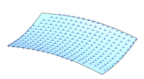
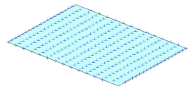

Fit Surface
Estimated time to complete this lesson: 10–13 minutes
Use the Fit Surface command to fit surfaces to facet bodies, curve features or groups (point sets or point groups) as part of a reverse engineering workflow.
You can fit five types of surfaces.
Fit Freeform
You can control the degree and number of patches, patch uniformity and fit direction. You can also control the boundary definition and smoothness of the fitted surface.

Fit Plane
You can specify a direction constraint for a planar surface so that the plane normal is parallel to the specified direction.

Fit Sphere
Fit Cylinder
Fit Cone

For any fitting operation except Fit Freeform, you can select the Automatic Point Rejection option and specify a rejection threshold distance so any points outside the threshold distance are not used for fitting a surface.
Fit Surface creates an editable feature. When editing the feature you can replace the target by selecting a different one.
Where do I find it?
|
Application |
Modeling, Shape Studio |
|
Toolbar |
Surface→Surface Drop-down→Fit Surface |
|
Menu |
Insert→Surface→Fit Surface |